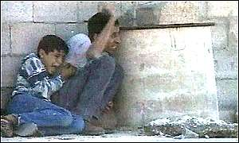
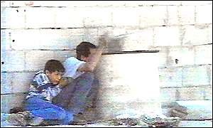
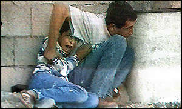
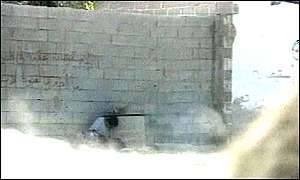

The Death of Muhammad Rami Jamal Aldura
Muhammad Rami Jamal Al Dura,12 years old, was killed in cold blood by an Israeli sniper as he huddled for protection with his father behind a metal barrel. Muhammad was killed on Saturday, 30 September 2000. The story and pictures below tell his story.
Photo Series
(left to right from top)
Please note the video footage can be viewed at http://www.france2.fr/vj/300920a.ram
Photo 1,2 and 3:- Father and son attempting to take shelter behind a metal barrel as his father tries to protect his son with his arm and by attempting to place himself before the bullets of the Israeli soldiers.
Photo 4 and 5:- The boy screams in panic as shots hit a wall just inches over their heads.
Photo 6 :- Muhammad Rami Aldura is fatally struck in the abdomen.
Photo 7 and 8 :- Muhammad lies dead.
|  |  |
|  |  |
 |  |
 |  |
-An army armed to the teeth and full of hatred executes a child in his father's arms -
By Munir Abu Rizeq and Rouhi Darabieh, Al Breij Refugee Camp
Monday 2 October, 2000:
The following story is a translated summary of an article appearing in today's, 2 October 2000, Al Hayat Al Jadida Newspaper. The authors of the article are both from Briej Refugee Camp in Gaza.
Muhammad's mother wasn't sure that the child being shot to death in the arms of his father on the TV screen before her was her own son. He certainly looked liked her son, but her son had gone out earlier with his father to buy a car. The screams for help of that child, who was barely twelve years old, and his father's screams and efforts to protect his child were met with the nothing more than the world's ignorance. She could do nothing more than let her copious tears fall on her face while watching the execution of an entire people in the slaying of a child and his father. Those scenes broke her heart and she hoped that this child that looked so much like her own son - but couldn't be because he was with his father buying a car - would survive this, along with his father.
We collected hundreds of bullets from the area surrounding that cement block, behind which Muhammad and his father were hiding in an effort to avoid the Israeli soldier's bullets. This location, which bore witness to the savagery and terrorism of the Israeli Occupation, continues to echo the screams of Muhammad and his father. All who look upon the site can now only picture Muhammad hiding behind the cement block and screaming for help behind his father, who was frantically trying to protect his child from the Israeli terrorists' bullets.
This site is more than two hundred meters from a fully armed and protected Israeli military base, but the furthest bullet shot at Muhammad and his father was only centimeters away and along the wall behind their heads.
The outcome of this scene was that Muhammad died of injuries sustained from five bullets to his body and head, with his father survived the eight bullets to his own body.
Muhammad Ad Durrah went with his father to buy a car and returned home with five bullets and a scull half-blown up.
Breij Refugee Camp in Gaza, where Muhammad Ad Durah lived out his short childhood, was clothed in black when we were visited by a multitude of children who were Muhammad's friends. One of these children, who is only ten years old, hurriedly tried to tell us that Muhammad was now riding a new car in heaven instead of the earthly one that the Israeli bullets prevented him from riding in. With teary eyes he added: "Jews killed him and God sent him to heaven."
We arrived at Muhammad's house, where the residents of Breij refugee camp were offering their condolences. A woman in her thirties, dressed in a black that was no different from the blackness that surrounded the whole camp, met us with eyes and face awash with the tears that told the story of a refugee living through one catastrophe after another. She was holding a fifth grader's schoolbooks and telling the women who were supporting so that she could stand, "He asked me to help him with his homework, then left with his father to buy a car after I dressed him in nice clothes to go with the new car."
Muhammad came back in those same clothes, but they were now soaked with his own blood and marked by the path of the five bullets that entered his body. He came back home with half of his head missing, but with open eyes, as if staring in disgust at the ignorant world watching him being executed and ignoring his father's pleas for help.
Muhammad's mother gathered the rest of her children around her and told us: "He was quarrelsome, but the closest to my heart among his brothers and sisters. God forgive him, he used to run way from school all the time, but he promised me this year that he wouldn't and asked me to help him with his studies. I would always forgive him whatever he did. All the neighbors loved him. God will compensate us for our loss, God is our refuge and we rely on Him to help us."
Muhammad's remaining books, photos, and clothes are far too much for any heart to endure or any eye to gaze upon.
The 50 square meters that made up Muhammad's house was not large enough to host all of the mothers from the camp who came to support Muhammad's mother. But no one dared move into the 3 square meter room where Muhammad used to sleep and study. The room is empty of any furniture; there are no seats, no desk to study on, and no closet for his clothes or a bed to sleep on; nothing apart from a few pale mattresses. His schoolbooks and notebooks are on the floor and his clothes and photos hang on the wall, which the strongest heart or eye cannot endure looking at without feeling extreme sorrow and anger. At the entrance to the room, Muhammad's aunt told us, "He used to sleep here, eat here, study here, and it was here that we took the last photograph of him with all of his brothers and sisters.
The few schoolbooks and notebooks gaze towards Muhammad's school bag, awaiting his pencil.
We left Muhammad's room and house to go to the hospital to see his father. Reaching his father was quite difficult, especially because most of the local and international news agencies were still trying to get detailed information about this awful crime which had upset all humanity. We promised his doctors that we would be long talking to him. We said hello to Muhammad's father, who answered us immediately with tears, "He was trying to "he was trying to make it easy for me. He kept saying 'Don't be afraid daddy, protect yourself.'"
"He stayed close to me, clutching me from my back while I was trying to keep him away from the bullets. But one bullet hit him in the leg. I started screaming and crying, hoping that the bullets would stop, but to no avail. He spoke to me then and said 'Don't be scared daddy, its ok, its just my leg, try and hide….' and those were his last words."
"I waved my hands trying to get the attention of an ambulance. I received several shots to my arm and shoulders. Afterwards, the shooting towards my son and me continued for almost an hour. Whenever any part of my body was seen outside of the cement block we were behind, a bullet hit me. Until, finally, bullets came from between the small space between the cement block and the wall we had our backs to, hitting and killing my son. Several bullets hit me as well and I stayed bleeding with my martyred son until I lost consciousness."
The small, weak body of the child Muhammad could not sustain the impact of the bullets, as it took only one to take his life from him. Israeli Occupation soldiers determination to kill him and his father was clear. Muhammad's father's description, the broadcasts on television screens and eye-witness testimonies confirm that Muhammad's father was trying to cross the street towards his house in Breij Refugee Camp when heavy shooting started from the Israeli military post on Al Shuhada junction. The father quickly tried to hide behind a cement block, half a meter high, along with his son, when they were both surprised by heavy shooting. Eye witnesses also added that an ambulance driver trying to reach them was shot and killed by live ammunition to his heart, and another Palestinian was also injured while trying to get the injured son and father to the hospital and away from the cement block.